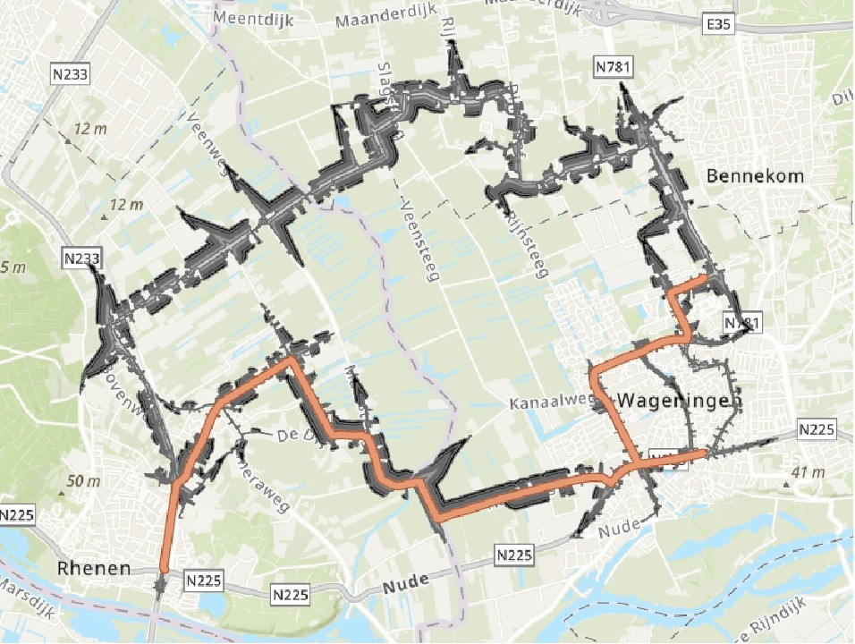

Brief Abstract / About Me
I am a curious and analytical person who gets a lot of energy from working with people and loves untangling complex problems, and keeping overview in complex situations and spotting efficient opportunities is something that comes naturally to me. With a background in Human Geography and a growing expertise in GIS, I am drawn to how people and their environments form each other. My real drive is visualising and simplifying complicated things, especially using machine learning to find patterns in spatial data. I like making abstract information accessible in a way that actually helps people.
Academic Roadmap
Selected Research & Projects

What effects does the Modifiable Areal Unit Problem (MAUP) have on Soil Organic Carbon data in Flevoland?
For the course Geoscripting (GRS33806)Investigated how aggregating soil organic carbon (SOC) data from 30m pixels to larger spatial units introduces systematic errors. Analysed both scale effects, at 5000m resolution nearly 50% of data variance is lost, following a roughly exponential relationship, and zonal effects, where random polygon boundaries cause certain agricultural fields to be consistently over, or underestimated. Results directly impact farmer subsidies and carbon credit calculations, highlighting why policymakers must be cautious with spatially aggregated data.

Light Rail Project Wageningen Rhenen
For the course GeoTools (GRS20806), looked for the cheapest route to build a light rail while taking environmental constraints into account. This project made sure to keep good structure due to the many map layers which needed to be combined, and to be able to recreate the same map when a small thing along the way needed to be changed.

Flooding modeling of Land van Maas en Waal
During the course Spatial Modelling and Statistics (GRS-30306) a Cellular Automata was used to model how the Municipality of Land van Maas en Waal would flood when a dyke breach takes place, taking into account uncertainties in the height of the landscape and the amount of water flowing in. This creates a more accurate description of flood risk since you cannot always rely on precise digital terrain models.